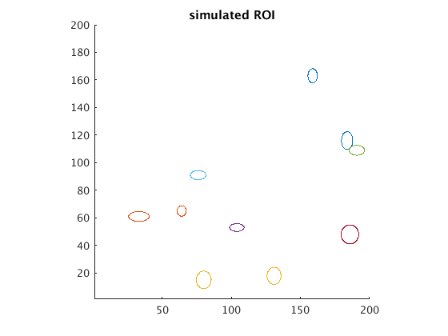
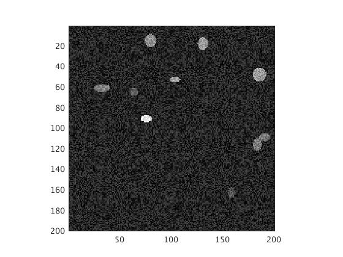

Contents
- simulation parameters
- basic parameters that should be tuned to simulate realistic data
- DFF model parameters
- randomize center of ROI, simulate as ellipses of some size
- plot a 2d image of the ROI
- what's the maximum fluorescence?
- simulate movie - data too large for vectorization, write a loop
- write the movie to a file
% script to generate a write an avi video -though this should be converted % to tiff (? I don't know what this is) - which simulates a calcium imaging % signal. % ROI is a structure with parameters for each ROI % % extra code required: https://github.com/HelmchenLab/CalciumSim % just download the code and add it to your path % author: Janis Intoy % date: November 3, 2016 clear all;
simulation parameters
N = 10; % number of ROI to simulate snrImg = inf; % signal-to-noise ratio, inf is no noise (TO DO) nsscale = 0.3; % for now to add noise that is a fraction of the maximum DFF snrDFF = 3; % signal to noise ratio of the DFF singals svMovie = 'simulateCalcImg'; % if empty doesn't save % svMovie = '';
basic parameters that should be tuned to simulate realistic data
don't go to big on these dimensions yet - memory issues, but they can be resolved easily
sz = 200; % spatial frame will be 512 x 512 dur = 5; % 100 seconds, but how long is a trace usually? Fs = 30; % 30 Hz recording % ROI shape parameters % basic ellipse shape: (x/a)^2 + (y/b)^2 = 1 mnROI = 5; % mean value of a, b sdROI = 5; % std of a, b
DFF model parameters
spikeRateMax = 20;
spikeRateMin = 5;
nT = Fs * dur; % number of time samples
randomize center of ROI, simulate as ellipses of some size
also generate a DFF for each ROI
ROI(N) = struct('center', [], 'var', [], 'indices', [], 'DFF', []); [xgrid, ygrid] = meshgrid(1:sz, 1:sz); for i = 1:N center = randi(sz, [1, 2]); % random center of ellipse v = rand([1, 2]) * sdROI + mnROI/2; % random a, b for ellipse % pixels within the ROI idx = find(((xgrid - center(1)) / v(1)).^2 + ... ((ygrid - center(2)) / v(2)).^2 < 1); % generate a DFF time course for this ROI S = modelCalcium(struct(), 0); S.frameRate = Fs; S.snr = snrDFF; S.dur = dur; S.spikeRate = spikeRateMin + (spikeRateMax - spikeRateMin) * rand(1); S.recycleSpikeTimes = 0; % generate random spikes S = modelCalcium(S, 0); % use saved parameters and don't plot DFF = S.data.noisyDFFlowResT; % save everything in struct ROI(i).center = center; ROI(i).var = v; ROI(i).indices = idx; ROI(i).DFF = DFF; end
plot a 2d image of the ROI
t = linspace(0, 2*pi, 100); figure(1); clf; hold on; for i = 1:N plot(ROI(i).var(1) * cos(t) + ROI(i).center(1),... ROI(i).var(2) * sin(t) + ROI(i).center(2)); end axis image; set(gca, 'XLim', [1, sz], 'YLim', [1, sz]); title('simulated ROI');
what's the maximum fluorescence?
cmax = 0; for i = 1:N cmax = max([cmax, ROI(i).DFF]); end
simulate movie - data too large for vectorization, write a loop
figure(100); clf; ax1 = axes('Position', [0.1 0.1 .8 .8]); himg = imagesc(zeros(sz, sz)); axis image; caxis([0, cmax]); colormap('gray'); mov(nT) = struct('cdata', [], 'colormap', []); im = zeros(sz,sz,nT); for t = 1:nT temp = zeros(sz, sz); for i = 1:N temp(ROI(i).indices) = temp(ROI(i).indices) + ROI(i).DFF(t); end % add noise for the video, but this should be done correctly by % actually using the input SNR temp = temp + rand(sz) * cmax * nsscale; % hack for noise im(:,:,t) = temp; set(himg, 'CData', temp); mov(t) = getframe(gcf); end save(svMovie,'im');
write the movie to a file
if ~isempty(svMovie) v = VideoWriter(svMovie); open(v); for i = 1:nT writeVideo(v, mov(i)); end close(v); end